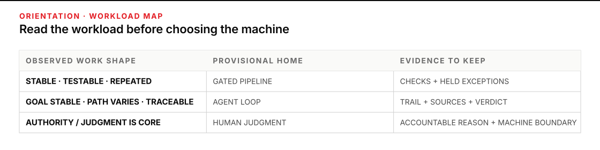
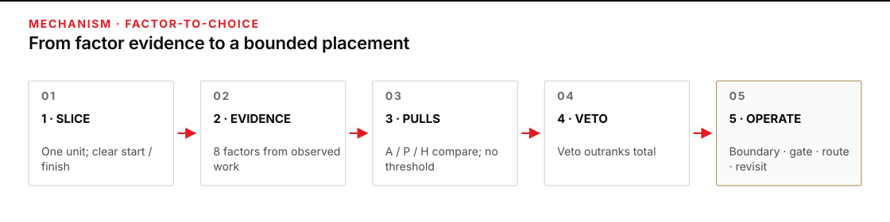
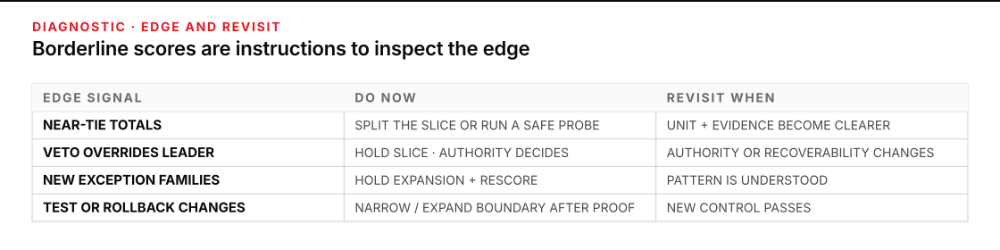

Choose the machine from the work, not the demo
A capable agent can perform a repetitive task. A workflow tool can be forced around a changing investigation. Neither fact tells you where the work belongs. The useful question is whether the shape of the work, the evidence available, and the consequence of a mistake make one operating form easier to control than the others.
Plan for 45–60 minutes. You will leave with a machine-choice scorecard and workload portfolio map for work from your desk. It will record eight factors, the evidence behind each score, a provisional choice, the machine boundary, the human gate, the exception route, and the event that forces you to revisit the placement.
Complete the three-way sort in P7 · The automation line first; it distinguishes an agent loop, a gated pipeline, and human judgment, including the difference between a path chosen at run time and one chosen at design time. Continue when you need to make that choice defensible across a portfolio, especially when volume, variability, and consequence point in different directions.

Figure transcript
Stable, testable, repeated work provisionally pulls toward a gated pipeline and requires repeatable checks plus held-exception records. Goal-stable work whose path varies but remains traceable provisionally pulls toward an agent loop and requires an action trail, sources, and an operator verdict. Consequential or judgment-rich work provisionally pulls toward human judgment and requires an accountable reason plus a clear machine boundary. These are starting pulls, not automatic decisions; authority and consequence vetoes are applied afterward.
Score the work slice, then apply the veto
Start with a work slice: one recurring unit with a visible start and finish. “Handle warranty claims” is too broad. “Extract the submitted fields,” “investigate a disputed failure,” and “approve a payment” are three different slices. They may need three different homes. A near tie often means you have scored a job title instead of a unit of work.
This is a form of function allocation—deciding what work a person and a machine each perform inside one system. Parasuraman, Sheridan, and Wickens show why a capability list is not enough: automation can support information gathering, analysis, decision selection, and action at different levels, and the choice changes human workload, awareness, skill, and recovery. Their model evaluates human-performance effects, reliability, and the cost of an incorrect decision, then iterates the design. It does not prescribe one universal automation level. Read the original IEEE paper.
The eight factors below turn that systems view into a field conversation. For each factor, award 0 when it gives no support to a choice, 1 when it offers conditional or secondary support, and 2 when the observed work strongly fits that choice. Score agent loop (A), gated pipeline (P), and human judgment (H) independently. Keep the evidence phrase beside the points.
The totals are prompts for comparison, not universal thresholds. A score of 12 has no meaning outside the anchored observations that produced it. Two thoughtful operators may differ by a point and still reach the same bounded choice. A high total never defeats an authority or consequence veto.
| Factor | Agent-loop pull | Gated-pipeline pull | Human-judgment pull |
|---|---|---|---|
| Workload variability | The goal and bounds stay stable, but the next source, tool, or reasoning move changes with evidence. | Inputs share fields, sequence, and rules; variation can be normalized or held. | Meaning, values, social context, or permissible action must be interpreted case by case. |
| Volume | Recurring heterogeneous cases repay a reusable harness and investigation trail. | Recurring volume repays designing, testing, and maintaining one fixed path. | The case is rare or singular, and building a machine would add more work than it removes. |
| Reversibility | Actions stay inside a bounded workspace with checkpoints and reviewable drafts. | Writes are staged, transactions roll back, and no item commits before checks or a gate. | The effect is difficult to undo, propagates before review, or changes a person’s standing. |
| Latency | The situation evolves while work proceeds, so observation and course correction add value. | A fixed deadline or machine-speed cadence rewards predictable passage through known steps. | Deliberation, consultation, or interpersonal timing is part of doing the work correctly. |
| Consequence, risk, and authority | The machine produces bounded analysis or a draft; an authorized person owns consequential action. | Effects are low consequence or governed by a pre-authorized rule with a real hold before commit. | The slice exercises reserved legal, safety, personnel, financial, access, or external authority. |
| Observability and testability | Intermediate moves leave a trail; sources, tests, or an independent check can challenge the result. | Deterministic checks can reject wrong shape, value, reconciliation, destination, or state before effect. | Correctness depends on material context or impact that the system cannot observe well enough. |
| Exception rate | Exceptions recur in recognizable families but require different evidence-seeking paths. | Exceptions are uncommon, typed, detectable, and routed without forcing them through the normal path. | Ambiguous exceptions are common enough that they are the work, not the edge of the work. |
| Value of judgment | Value comes from searching, comparing, and synthesizing evidence before the operator’s verdict. | Value comes from consistent execution; judgment can be spent once in rules, checks, and boundaries. | The accountable, normative, relational, or credibility judgment is itself the product. |
Use two vetoes before you choose
- Authority veto: if policy, law, delegation, or organizational role reserves the decision or action to a person, the consequential slice stays human-led regardless of its score. A machine may prepare evidence or a draft inside a written boundary; it does not inherit the authority.
- Consequence veto: if a wrong action could create a safety, legal, personnel, financial, access, privacy, external-commitment, or irreversible effect, and the effect cannot be intercepted or recovered through proven controls before harm, this scorecard cannot authorize machine action on that slice. Hold it and return the allocation decision to the responsible authority.
An authority veto does not ban all machine help. It tells you where to cut the slice. A machine might gather records and test completeness while a person makes the release, payment, discipline, or publication decision. A consequence veto is stricter: it holds the proposed machine action until the accountable safety or system authority has made the allocation.
“Keep a human in the loop” is not a universal repair. In a time-critical protective function, a person may be physically unable to intervene before harm. The resulting design may require pre-authorized automatic protection rather than live approval, but that is a safety-engineering decision outside this field scorecard—not permission to let a high total decide. NASA’s crew-interface standard makes both parts visible: use task analysis and function-allocation trade studies, keep roles and automation state clear, preserve safe recovery, and recognize when time to effect is too short for successful human intervention.
Write the operating boundary, not only the label
A placement is incomplete until it answers five questions:
- Boundary: what may the machine read, decide, and change?
- Human gate: which exact decision or state transition requires a person?
- Exception route: where does an item go when the normal assumptions fail, and who receives it?
- Evidence: what trail or test lets another person inspect the choice and the run?
- Revisit trigger: which observed change forces a fresh score rather than quiet drift?
These fields prevent a common allocation error: automate the easy pieces, then leave a person to absorb every abnormal condition without enough context, practice, or recovery support. Bainbridge’s classic “Ironies of Automation” shows that predictability, rate of change, failure behavior, variability, shutdown cost, and operator capability all affect the resulting human–machine system. The role left to the person is part of the design, not residue.

Figure transcript
First slice the workload into one observable unit. Second record evidence for variability, volume, reversibility, latency, consequence, risk and authority, observability and testability, exception rate, and value of judgment. Third assign zero-to-two pull points to agent loop, gated pipeline, and human judgment; totals are prompts, not thresholds. Fourth apply the authority and consequence vetoes, which outrank totals. Fifth record the choice, machine boundary, human gate, exception route, and revisit trigger.
Worked portfolio: four slices in a field-service group
A regional equipment service group is deciding where to place four workloads. The group scores the work as it operates today, not the tool it hopes to buy. Each points cell shows A/P/H for agent loop, gated pipeline, and human judgment. The eight entries follow this order: variability (V), volume (N), reversibility (R), latency (L), consequence/authority (C), observability (O), exceptions (E), and judgment value (J).
| ID and observed work | Factor points A/P/H | Total A/P/H | Veto | Placement, boundary, and return |
|---|---|---|---|---|
| W-01 · Normalize nightly inspection reports. Six hundred reports use one schema and rule set. Output is a staged draft due by morning. Field, count, and reconciliation checks run before a supervisor releases it. About 3% follow named exception codes. | V 0/2/0N 0/2/0R 0/2/0L 0/2/0C 0/2/0O 0/2/0E 0/2/0J 0/2/0 | 0/16/0 | None for the draft slice. | Gated pipeline. The line may normalize and validate only. The supervisor releases the master. Any failed check routes with its reason to the report steward. Revisit if schema drift or untyped exceptions rise. |
| W-02 · Investigate intermittent pump downtime. Twelve cases a month draw from different logs, work orders, and sensor views. Telemetry keeps changing while the case is open, and the evidence changes the next search. The output is a cited diagnosis draft due within a shift. A maintenance authority chooses the disposition. | V 2/0/0N 2/0/0R 2/1/0L 2/0/0C 1/0/1O 2/1/0E 2/0/1J 2/0/1 | 15/2/3 | None on the investigation slice; disposition is outside its boundary and reserved. | Agent loop for investigation. The agent may search named sources and draft a cited theory. It may not change maintenance state. Missing evidence or a tool request outside bounds returns to the investigator; disposition returns to the maintenance authority. |
| W-03 · Publish an emergency service bulletin. One or two cases a year. Evidence is incomplete and changes quickly. A draft can be reviewed, but publication creates an external safety commitment. Thirty minutes may be available. Correctness cannot be fully established before release. | V 1/0/2N 0/0/2R 1/0/2L 2/1/1C 0/0/2O 1/0/2E 1/0/2J 0/0/2 | 6/1/15 | Authority and consequence. | Human-led. An agent may assemble a source-linked draft in a nonpublishing workspace. The duty officer owns wording and publication. Conflicting evidence returns to named specialists. Revisit only if authority and pre-release assurance change—not because a faster model appears. |
| W-04 · Handle warranty claims. Three hundred arrive weekly. Intake fields are stable, narratives vary, and 22% require investigation. Intake must be acknowledged the same day, while supporting records often arrive during the investigation. Drafts are reversible. Eligibility checks are deterministic, but causal judgment varies. Approval or denial exercises payout authority. | V 2/1/1N 1/2/0R 1/2/1L 1/2/0C 1/1/2O 1/2/1E 2/1/1J 2/0/2 | 11/11/8 | Authority on payout. | Slice again. Intake and rule checks become a pipeline. Variable evidence pursuit becomes an agent loop. An authorized adjuster approves or denies. Unknown exception types return to process design. Revisit when exception families or eligibility rules change. |
What matters: W-01 contains language, so an agent can demonstrate it impressively. Yet low variability, high volume, deterministic checks, reversible staging, and typed exceptions make a fixed path easier to replay and defend. W-03 remains human-led despite urgency. Latency creates a reason for bounded machine support; it does not confer publication authority.
W-04 exposes a second useful result: a close comparison is not a command to average the machines. It is a diagnostic. The workload boundary contains three different functions, and the authority veto identifies the seam that must stay human.
Diagnostic example: the machine form does not fit the work
An earlier W-01 production-rehearsal record shows what happened after the group chose an agent loop because a demo handled ten reports end to end. The agent used different extraction paths for similar files, renamed a field in one batch, silently omitted two rows after a parse error, and produced no stable reconciliation record. Every output looked plausible, while reruns changed which rows needed hand repair.
The symptom is not “the model is weak.” The machine form is wrong for the work shape. The team reopens the scorecard: all eight factors pull toward a pipeline, and none requires run-time path selection. Recovery is to freeze the schema and path, make row counts and reconciliation deterministic, stage all writes, and route failed checks with evidence to the report steward. A language model may remain at one bounded extraction station; it no longer chooses the route.
This recovery also shows why tool capability is poor placement evidence. A machine can do a task without being the machine you should operate.

Figure transcript
When totals are near each other, split the workload or run a small safe probe, and revisit when the unit and evidence are clearer. When a veto overrides the leading total, hold the consequential slice and return allocation to the responsible authority, revisiting only if authority or recoverability changes. Authority may keep the decision human or require a separately engineered automatic protection when human intervention would be too slow. When new exception families appear, hold expansion and rescore the affected slice, revisiting when the pattern is understood. When observability or rollback changes, narrow or expand the machine boundary only after the new check or recovery path is proven.
Build a portfolio map for four research-administration workloads
Plan 20 minutes. Use only the supplied facts. For each item, score all eight factors, check the two vetoes, choose a home or split the slice, and write a boundary, human gate, exception route, and revisit trigger.
| Item | Supplied workload evidence |
|---|---|
| A · expense normalization | Four hundred fifty lines arrive weekly in the same seven columns. Rules are stable. Output is a draft due next morning. Totals and required fields reconcile before a controller releases it. Three percent carry one of four named exception codes. |
| B · reconstruct a grant requirement | Eight cases arrive monthly. Evidence may be in email, an amendment, a portal log, or meeting notes. Each finding can cite its source. The path changes as contradictions appear. The product is a reversible analysis draft; a program officer decides what the institution will assert. |
| C · revoke laboratory access | One to three cases arise each quarter after a safety event. Evidence may be incomplete or contested. Revocation changes a person’s standing and is reserved to the safety officer. Context and consultation are central; unusual conditions are the normal case. |
| D · process laboratory access requests | Two hundred forty arrive weekly. Ninety percent follow stable eligibility rules. The other ten percent require different searches through sponsor terms, approved protocols, and safety records; each finding can cite its source. Draft records are reversible, but changing entitlement is high consequence and reserved. The service target is two hours. |
- Write the unit of work. If one row contains more than one decision, mark the seams before scoring.
- Award 0–2 points to A, P, and H for each factor. Write one evidence phrase beside every nonzero score.
- Apply the authority and consequence vetoes. Do this after scoring so the conflicting pulls remain visible.
- Choose the machine form, then write what it may not do. Name the exact human return and exception destination.
- Add one trigger that would make today’s placement stale.
Stop condition: stop and mark UNKNOWN when a missing fact could change the choice—for example, whether a write is reversible or who holds authority. Do not invent a convenient answer to finish the table.
- A → gated pipeline. Low variability, high volume, reversible staging, deterministic reconciliation, typed exceptions, and rules designed once create a strong P pull. The controller releases; unmatched codes route to the expense owner. Revisit on schema, rule, or exception-family change.
- B → agent loop. The goal is stable while evidence paths vary. Source-linked intermediate work is observable, and the draft is reversible. The agent stops before institutional assertion; contradictions return to the program officer. Revisit if the source set becomes standardized enough for a fixed path.
- C → human judgment. The authority veto decides the consequential slice, and high judgment value, weak reversibility, low observability, and exception-rich context agree. A machine may organize records without recommending or executing revocation. Disputed facts return to the safety officer and required specialists.
- D → split the work. A fixed pipeline can validate stable eligibility facts and prepare a held record; an agent loop may assemble cited evidence for ambiguous restrictions; an authorized person changes entitlement. The authority veto survives the two-hour target. Revisit if exception families, policy, or pre-commit tests change.
Copy the machine-choice scorecard and portfolio map
WORK SLICE: [verb + object]
START / FINISH: [observable boundaries]
| Factor | Evidence from actual work | Agent 0–2 | Pipeline 0–2 | Human 0–2 |
|---|---|---:|---:|---:|
| Workload variability | | | | |
| Volume | | | | |
| Reversibility | | | | |
| Latency | | | | |
| Consequence / risk / authority | | | | |
| Observability / testability | | | | |
| Exception rate | | | | |
| Value of judgment | | | | |
| TOTAL — comparison prompt only | | | | |
Authority veto: YES / NO — evidence:
Consequence veto: YES / NO — evidence:
| Workload / slice | Evidence pointer | A/P/H totals | Choice | Machine boundary | Human gate | Exception route + owner | Revisit trigger |
|---|---|---|---|---|---|---|---|
| | | / / | AGENT / PIPELINE / HUMAN / SPLIT AND RESCORE | May: ___; must not: ___ | Person + exact decision/state | Destination + named owner | Observed change + review date |
Unknowns that could change the choice:
Smallest safe probe, if needed:
Placement owner and date:Rules that override or invalidate a placement
- An authority veto wins over the score. Machine support stops before the reserved personnel, release, payment, access, or publication decision.
- A near tie often means the slice is too broad. Split intake, investigation, consequential decision, and response before scoring again.
- Exception drift invalidates the old evidence. Hold expansion, inspect the new families, and rescore the affected slice.
- Reversibility and deterministic tests remove barriers; they do not create an obligation to automate. Reassess all eight factors and maintenance cost.
- A choice without a machine boundary, human gate, exception owner, and revisit trigger is not an operating allocation.
Map one desk portfolio without deploying anything
Choose three to five recurring work slices from your desk. Include one that seems obviously automatable and one whose placement is disputed. Time-box 30 minutes. Use recent counts, samples, incident notes, policy, and actual review artifacts; do not ask a model to guess the evidence or score its own future role.
Keep this first pass read-only. Your boundary is the portfolio record itself: no production writes, no permission changes, no external messages, and no automated decisions. If a placement needs proof, name the smallest safe probe and the evidence it must produce. A proposed machine is not a deployed machine.
Stop and return to the relevant human authority when either veto fires; when authority is unclear; when an effect is hard to reverse; when correctness cannot be observed before harm; when the exception route has no owner; or when affected people, policy owners, and operators disagree about what judgment is being removed. Bring the scored factors and the disputed seam. “AI could do it” is not a decision record.
Reopen the map when volume changes enough to alter the build trade, variability or exception families drift, a reliable test appears or disappears, rollback changes, latency requirements move, consequence or delegated authority changes, or the human judgment being preserved is redesigned. The NIST AI RMF Core treats context mapping, measurement, monitoring, roles, and risk response as iterative lifecycle work. Machine choice should age the same way.
Sources
- Parasuraman, Sheridan & Wickens · A Model for Types and Levels of Human Interaction with Automation — function types, levels, human-performance effects, reliability, consequence, and iterative allocation.
- Lee · Review of “Humans and Automation: Use, Misuse, Disuse, Abuse” — the enduring evidence on overreliance, underuse, monitoring, training, and interaction design.
- Bainbridge · Ironies of Automation — abnormal conditions, predictability, variability, recovery, and the work left to human operators.
- National Academies · Allocation of Tasks to Humans and Automation — why static “humans are better at / machines are better at” lists do not settle context-dependent authority and allocation.
- NASA · Crew Interfaces, section 10.6 Automation — task analysis, function-allocation trade studies, mode clarity, operator recovery, and automation-state evidence.
- NIST · AI Risk Management Framework Core — context, human roles, impact, testing, monitoring, response, and periodic review.
- NIST · AI Risk Management and Human–AI Interaction — differentiated human roles, lost context, and the limits of turning complex judgment into a metric.